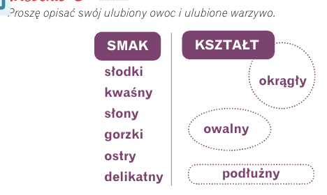
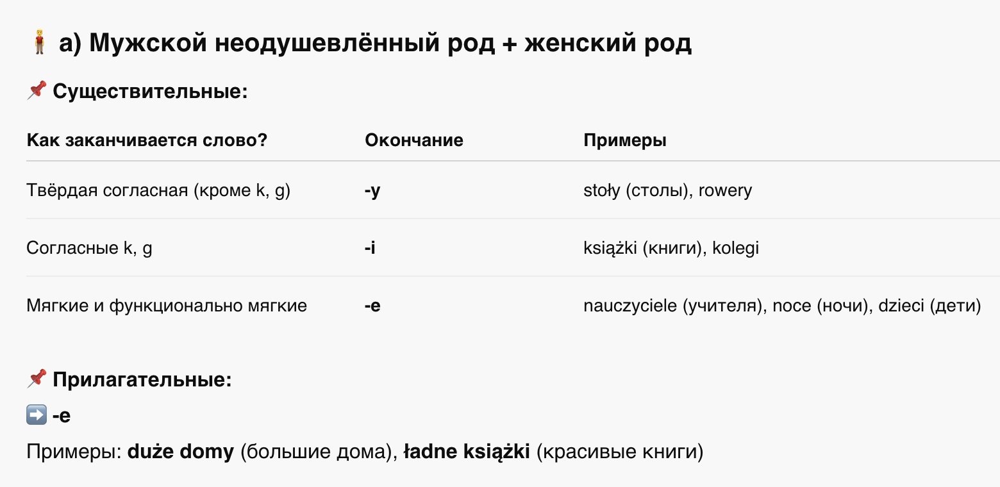
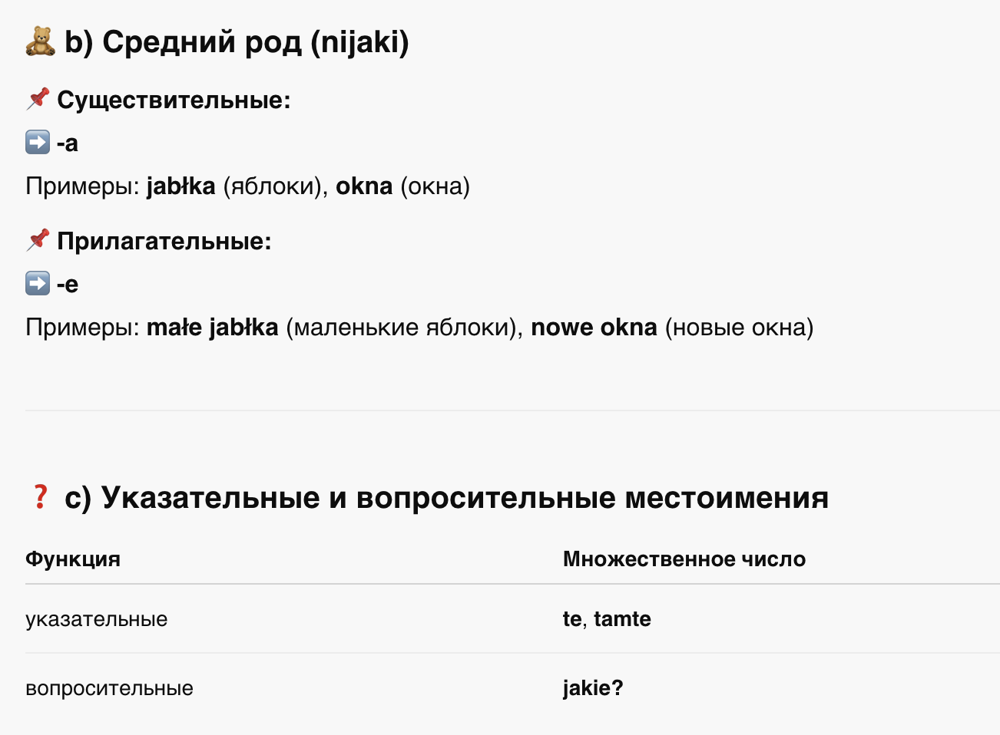
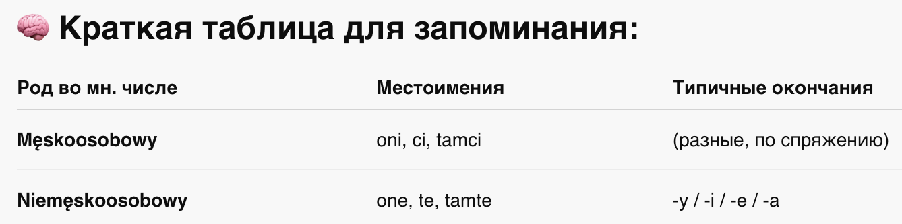
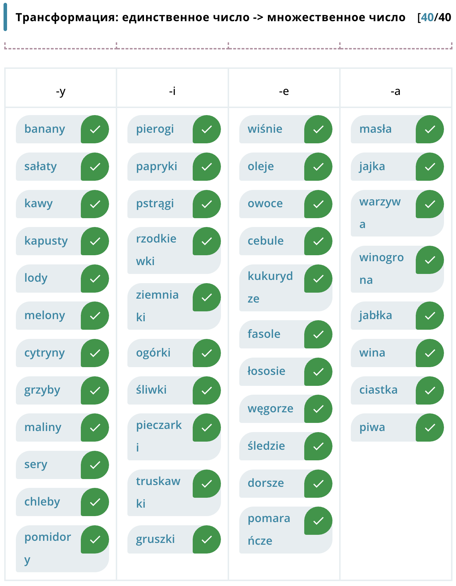
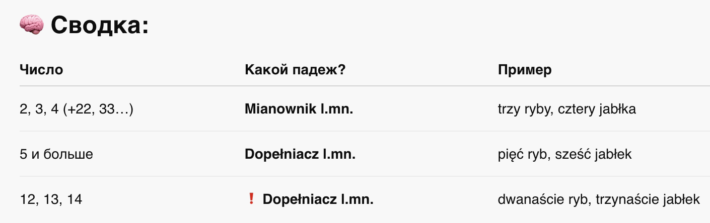
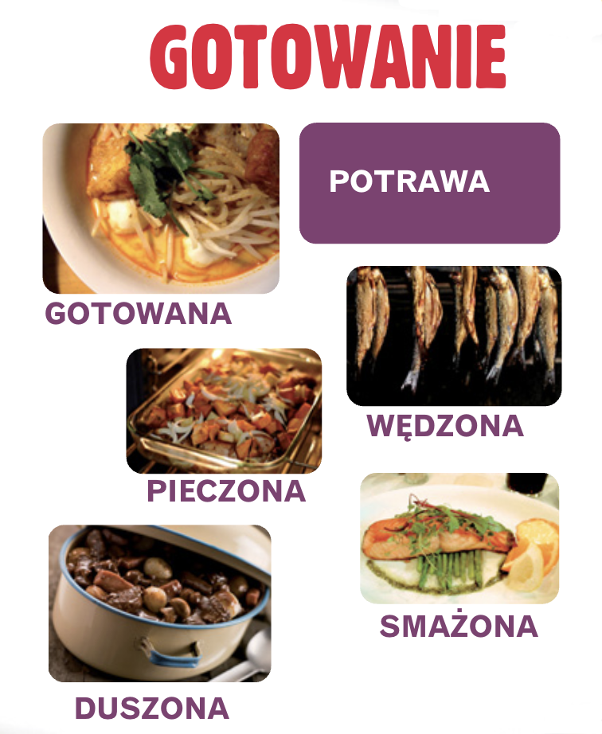
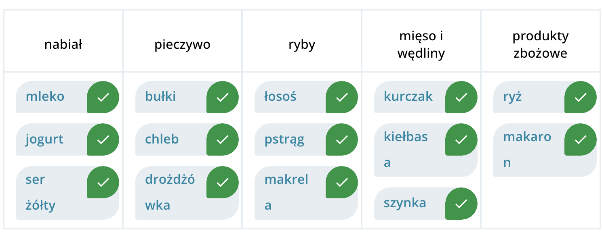
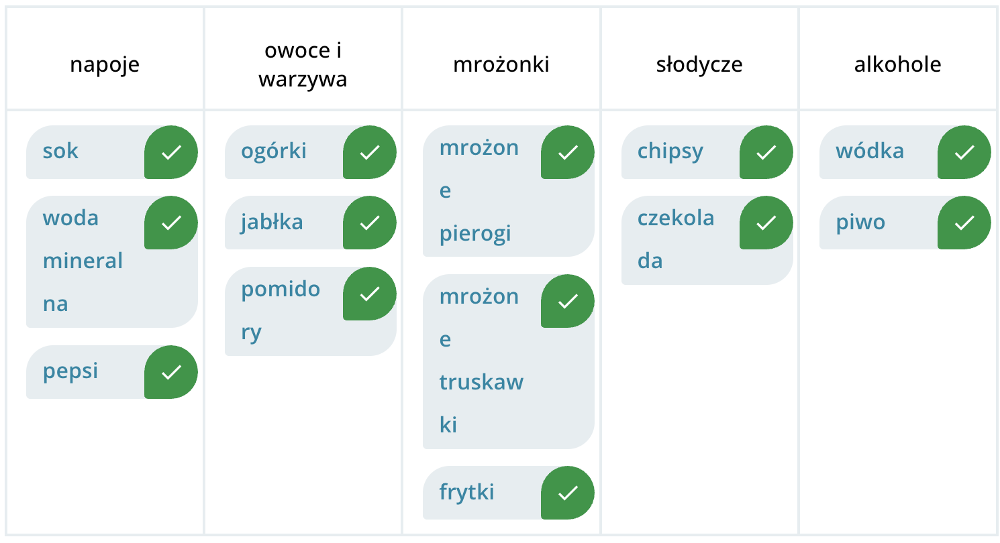

Krok Po Kroku 1
Temat 09 - Lubisz marchewkę?
A. Owoce i warzywa

Sałatka1
por z jabłkiem, z rodzynkami i ze śmietaną

Sałatka2
marchewka z selerem, z jabłkiem i z cytryną

Sałatka3
pomidory z ogórkiem, z papryką, z czosnkiem, z ctbulą i z
oliwą

Sałatka4
sałata z kukurydzą, z pomidorem, z fasolą, z papryką, z
czosnkiem z oliwą

Sałatka5
sałatka z ogórkiem, z rzodkiewką i ze śmietaną
❓ PYTANIA O SMAK, KSZTAŁT I KOLOR
Używamy ogólnych pytań typu:
👉 Jaki to ma… smak / kształt / kolor?
albo
👉 Jaki smak / kształt / kolor ma… [obiekt]?
Odpowiedzi mogą mieć dwie formy:
A. Prosta cecha (To jest słodkie)
B. Rozwinięta forma (To ma słodki smak)

C. Mianownik liczba mnoga
📚 Rzeczowniki w liczbie mnogiej – podział rodzajowy
Во множественном числе все существительные делятся на две грамматические группы:
👨👨👦 1. Мęskoosobowy (мужской одушевлённый род)
Это существительные мужского рода, обозначающие людей мужского пола или
группы, в которые входит хотя бы один мужчина.
✅ Используем местоимения:
oni (они)
ci, tamci (эти, те)
jacy? (какие?)
🔸 Примеры:
mężczyźni (мужчины)
chłopcy (мальчики)
studenci (студенты)
lekarze (врачи)
aktorzy (актёры)
policjanci (полицейские)
👩👧👦 2. Niemęskoosobowy (не-мужской одушевлённый род)
Это:
неодушевлённые существительные мужского рода
все существительные женского и среднего рода
женщины, дети, животные, предметы
✅ Используем местоимения:
one (они)
te, tamte (эти, те)
jakie? (какие?)
🔸 Примеры:
kobiety (женщины)
książki (книги)
dzieci (дети)
🔤 Окончания существительных и прилагательных во множественном числе




🔢 Падеж после числительных в польском языке
В польском языке выбор падежа после числительного зависит от его формы.
✅ 1. Числительные 2, 3, 4 (а также 22, 33, 104 и т.п.) → Именительный падеж множественного
числа (Mianownik l.mn.)
📌 Эти числительные управляют именительным падежом, то есть форма слова остаётся
"нормальной" во множественном числе.
Примеры:
- dwa chleby (два хлеба)
- trzy ryby (три рыбы)
- cztery jabłka (четыре яблока)
- 33 domy (33 дома)
⚠️ Внимание: 12, 13, 14 – исключение!
Хотя эти числа заканчиваются на -2, -3, -4, они входят в группу -naście
(подростковые числа).
📌 Поэтому они требуют родительного падежа множественного числа (Dopełniacz l.mn.)
Примеры:
- 12 chlebów (12 хлебов)
- 13 ryb (13 рыб)
- 14 jabłek (14 яблок)
❌ 2. Числительные 5 и выше (5, 6, 7… 11, 15, 100…) → Родительный падеж множественного числа
(Dopełniacz l.mn.)
📌 После этих числительных всегда используется dopełniacz.
Примеры:
- 5 chlebów (5 хлебов)
- 7 ryb (7 рыб)
- 100 jabłek (100 яблок)

D. Supermarket


